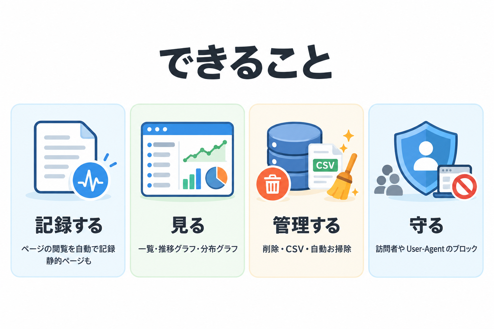
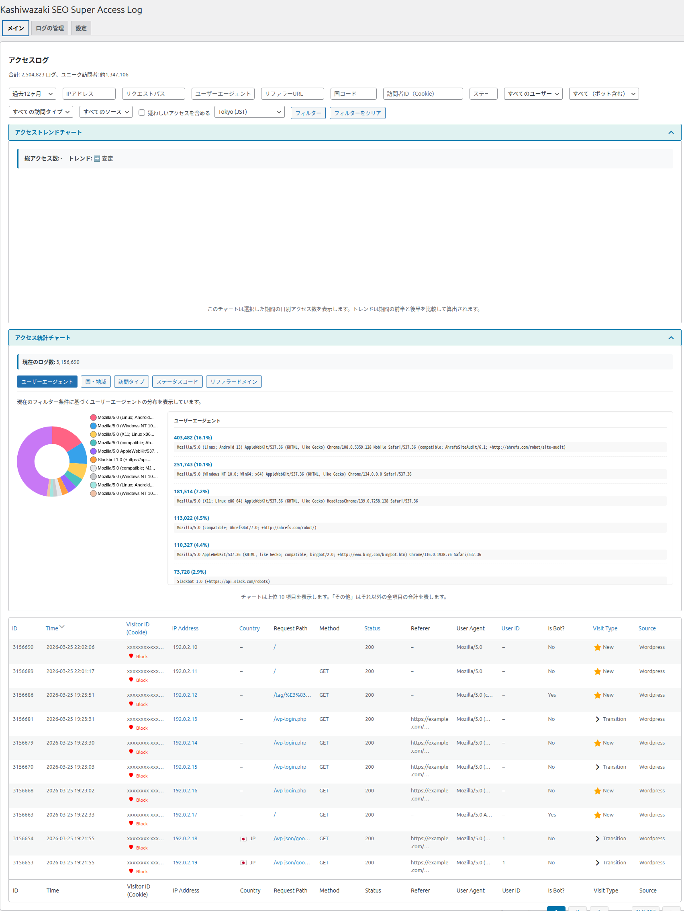

Kashiwazaki SEO Super Access Log マニュアル

WordPress サイトへのアクセスを 1 件ずつ記録し、一覧・グラフ・CSV で確かめられるアクセスログのプラグインです。このマニュアルでは、画面にあるすべての項目の意味と使い方を説明します。
サイトに誰が・いつ・どのページに来たのか、どこから来たのか、ボットなのか人なのか。アクセス解析サービスの集計値だけでは分からない「1 件ずつの記録」を、WordPress の中に残して確かめられます。記録は自動で行われ、管理画面の 1 つのページ（3 つのタブ）ですべての操作ができます。
主な機能
自動で記録
ページの閲覧を 1 件ずつ記録します。静的な HTML ページも、コードを貼れば同じログに記録できます。
絞り込みとグラフ
16 の条件で絞り込み、日ごとの推移と 5 つの観点の割合をグラフで確かめられます。
管理と防御
古いログの自動削除、CSV の書き出しと取り込み、訪問者や User-Agent によるブロックができます。

画面の構成
WordPress 管理画面の左メニューにある「Kashiwazaki SEO Access Log」を開くと、次の 3 つのタブを持つ 1 ページが表示されます。タブを切り替えてもページは再読み込みされず、前回開いていたタブが次に開いたときも選ばれた状態になります。
| タブ | できること | 説明しているページ |
|---|---|---|
| メイン | ログの一覧、絞り込み、合計とユニーク訪問者数、アクセスの推移グラフ、割合のグラフ、訪問者のブロック | メイン画面の見方 / 絞り込み / グラフの見方 / ログ一覧とブロック |
| ログの管理 | データベースの状態の確認と軽量化、キャッシュの管理、ログの削除、CSV の書き出しと取り込み、動作の確認 | データベースとキャッシュ / ログの削除 / CSV |
| 設定 | 表示する列、記録から外すアクセス、自動削除、国の判定、静的ページの計測、疑わしいアクセスの判定、ブロック | 設定：表示と記録 / 設定：ログフィルタとブロック / 静的ページの計測 |

記録される内容
1 件のアクセスごとに、次の情報を記録します。どのアクセスが記録されないかは「記録のルール」で説明しています。
| 項目 | 内容 |
|---|---|
| 日時 | アクセスがあった日時 |
| 訪問者 ID | ブラウザに保存する Cookie で見分ける、訪問者ごとの ID |
| IP アドレス | アクセス元の IP アドレス（Cloudflare などを経由していても、訪問者の IP アドレスを記録します） |
| 国 | ブラウザの言語設定などから推定した国コード |
| ページ | 開かれたページのパス（静的ページは URL） |
| 方式・結果 | リクエストの方式（GET など）と、応答の状態を表す番号（200 や 404 など） |
| 参照元 | そのページに来る前のページ（リファラー） |
| ブラウザ | ブラウザやボットの名前（User-Agent） |
| ログイン中のユーザー | WordPress にログインしていればユーザー ID |
| ボットかどうか | User-Agent から判定した結果 |
| 訪問タイプ | 新規・リピーター・ページ遷移のどれか |
| 出どころ | WordPress のページ・静的ページ・CSV から取り込んだもの、のどれか |
SEO / GEO における活かし方
SEO（検索エンジン最適化）
検索エンジンのクローラー（Googlebot や bingbot など）がいつ・どのページを訪れているかを、ボットの判定と User-Agent の絞り込みで確かめられます。クロールされていないページや、404 になっているページに気づく手がかりになります。どのページに人のアクセスが集まっているかも分かるので、改善の優先順位を決める材料になります。検索順位そのものへの効果は、検索エンジンの評価によります。
GEO（生成 AI の検索への対応）
既定のボットの判定には、GPTBot・ClaudeBot・PerplexityBot などの AI のクローラーが含まれています。AI のクローラーがどのページを読みに来ているかを、ほかのボットや人のアクセスと分けて確かめられます。AI の回答に引用されるかどうかは、各サービスの判断によります。
表示の速さへの影響
訪問者側のページには、追跡用の JavaScript を出力しません（静的ページの計測を使う場合を除く）。記録はページを返し終えた後にサーバー側で行うので、ページの表示を遅くしにくい作りです。
このマニュアルの目次
| ページ | 内容 |
|---|---|
| インストール・初期設定 | 導入、有効化したときに自動で行われること、最初にしておきたい設定 |
| メイン画面の見方 | メインタブの 5 つの領域と、合計・ユニーク訪問者数の見方 |
| 絞り込み | 16 の絞り込み条件と、表示の時間帯 |
| グラフの見方 | アクセスの推移グラフと、5 つの観点の割合のグラフ |
| ログ一覧とブロック | 一覧表の 14 列、並べ替え、疑わしいアクセスの印、ブロックと解除 |
| 記録のルール | 記録されるもの・されないもの、訪問タイプ・国・IP アドレスの決まり方 |
| 設定：表示と記録 | 表示カラム、Cookie、アクセス除外、チャートの上限、自動クリーンアップ、国の判定 |
| 設定：ログフィルタとブロック | 疑わしいキーワード、除外パターン、ボットの判定、静的ファイルの除外、ブロック |
| 静的ページの計測 | WordPress ではないページのアクセスを記録する方法 |
| データベースとキャッシュ | データベースの状態、軽量化、キャッシュ、デバッグ情報 |
| ログの削除 | 条件を指定した削除と、すべての削除 |
| CSV エクスポート・インポート | ログの書き出しと取り込み、ファイルの管理 |
| 自動で行われること | 定期処理と、有効化・無効化・削除・更新のときに起きること |
| メッセージ一覧 | 管理画面に出るメッセージの意味と対処 |
| 困ったとき | よくある困りごとの原因と対処 |
| 用語集 | このマニュアルに出てくる用語 |
動作要件
| 項目 | 要件 |
|---|---|
| WordPress | 5.9 以上 |
| PHP | 7.4 以上 |
| ブラウザ（管理画面） | 最新の Chrome / Edge / Firefox / Safari。グラフの部品と国旗の画像を、インターネット上の配信元から読み込みます |
| マルチサイト | 対応（サイトごとにログを記録します） |
画面の一部（一覧表の列名、Yes / No、トレンドの表示、訪問者向けのブロック画面など）は英語のまま表示されます。このマニュアルでは、画面に出る文言をそのまま引用して説明します。